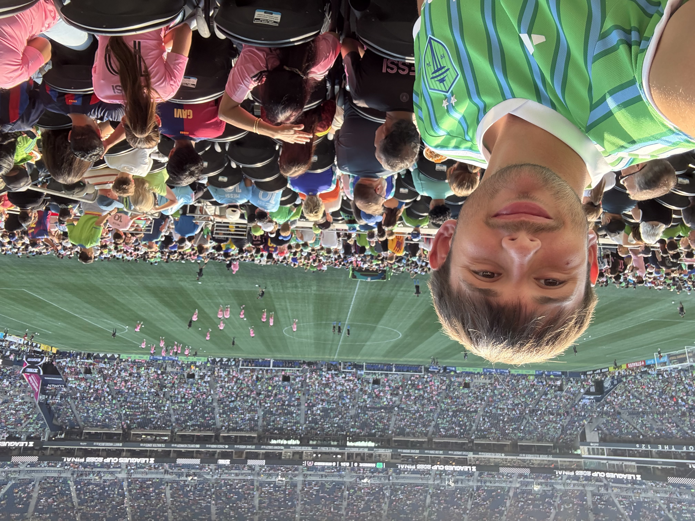
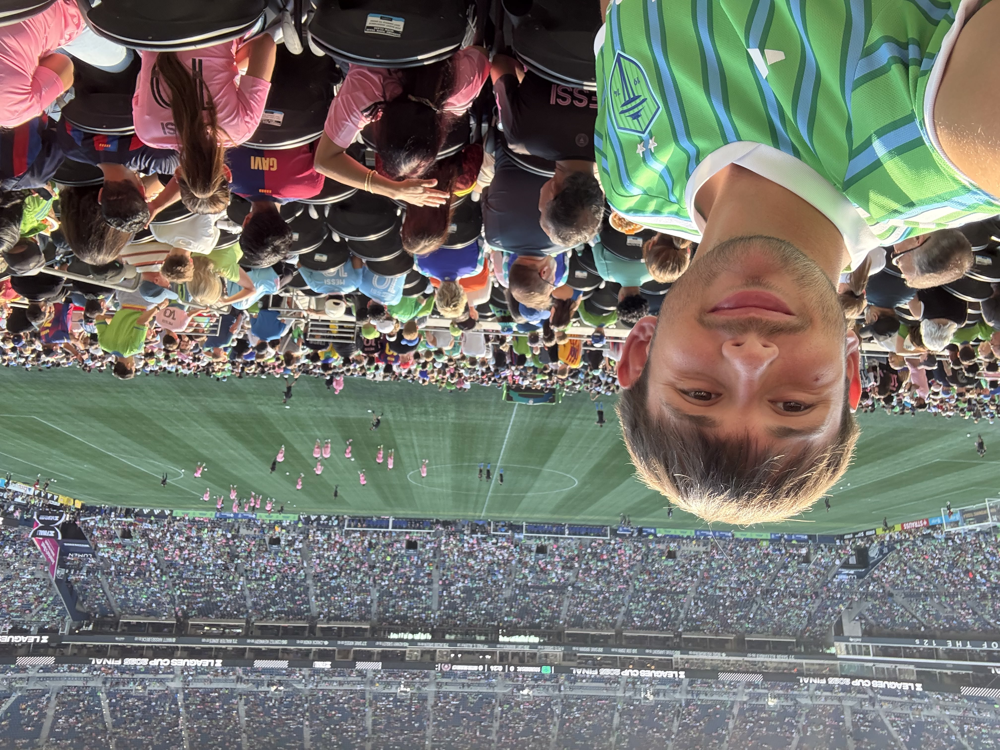

Jacob Wald
Hello! My name is Jacob Wald and I am from Tacoma, Washington. I grew up in a military family and have lived all over the country and even in Germany! I am a currently persuing my masters degree at the University of Michigan-Dearborn, studying Software Engineering. In May 2025, I completed my undergraduate degree in Computer Science at The University Of Virginia. My passion lies in web development, and I have aspirations of leading software development teams in the future. You can check out the website I built for my Wheelchair Tennis Team during my time at Virginiahere. Outside of school, I love the outdoors. I spent my childhood at summer camps, camping, kayaking, and hanging out with friends. In my later life, I go on an annual kayak camping trip with my dad. I also love sports, video games, and watching TV shows. I am currently a student-athlete, playing on the varsity Wheelcahir Tennis Team at University of Michigan's main campus, Ann Arbor. During the winter, you will always catch me skiing on the slopes!


Interests
As a tennis player, I guess my favorite sport is tennis, but before I played tennis, it was always soccer. To this day I am a die hard Seattle Sounders fan. As soon as my family moved to Washington, we bought season tickets, and have had them ever since. Most recently, I flew back to Seattle to watch the Sounders beat Inter Miam FC in the Leagues Cup final.
As I said in my bio, I love watching TV shows and Anime. I am a die hard Game of Thrones fan, but the show I am most invested in has to be One Piece, a show and manga that has been releasing material for over 25 years. I am always caught up on the weekly anime episodes and manga chapters.
I also love to travel. When I lived in Germany as a kid, we went all over Europe, and it gave me a love for traveling to new places. This summer, I went to Japan with my friends, and Egypt with my family. I love learning about new cultures and seeing new places.

 
